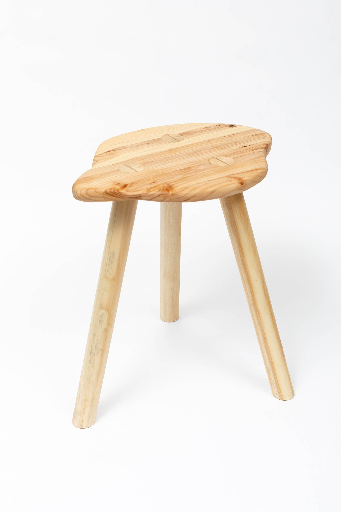

<<
Soft Things
Statement accompnaying 2019 exhibition Elsewhere
As a newborn I moved from my birthplace of Sydney to Hong Kong. Though I do not remember the journey, this relocation foreshadowed my life ahead— one of continuous migration.
Over the years, flying from place to place, I have spent many hours in purgatory at the airport.
Past the security checkpoint, you enter a restricted zone where you are pressed against the airport’s abrasiveness. The floor is hard below your feet; the cold fluorescent lights ricochet off shiny surfaces; the booming announcements assault your ears.
Holding you captive, the airport forces upon you the unforgiving hardness of the now.
Surrounded by this hardness, I seek out softness.
I remember the homes I am far away from, and wander to the places I am going to.
Unlike the defined now, memory and dreams have hazy edges and doughy forms. The light is not harsh but gentle, washing over you like a sunset’s pink afterglow. In these malleable spaces, both reconciliation and imagination are possible.
Drawing from everyday subject matter, I make images and objects that are sensually soft.
 strawberries & cream, 2019
strawberries & cream, 2019
handmade book (edition of 10)
5 x 7.5 in
 giraffe, 2018
wood
20 x 14 x 22 in
In my furniture, I sculpt wooden stools with imaginative forms. As the river does to rock, I shape the wood, wearing down the surface till it is soft to the touch. Made to be sat on, each stool hugs your body as you rest on its warm surface.
In paintings, however, the softness touches not your body but your eye. This visual softness comes from both color and texture. In my Mountain paintings, I employ luminous colors alluding to carefree summers. The colors are formed by combining wet and dry media, creating textures that invite action: to be touched, to be held, to be stroked...
On a raw canvas surface, I shade in the mountain’s shape with pastel. I then fix the pastel with clear acrylic medium, blurring the drawn lines, rubbing the powdered pigment into the canvas’ weave. Repeating this process, I gradually form the mountain in the way we form memories or dreams: through successive acts of remembering and imagining. In this process we at times lose detail and at other times gain clarity.
mountain (blue, pink, green), 2019
pastel, acrylic and oil on canvas
24 x 24 in
dinner, 2019
pencil, pastel, acrylic and oil on canvas
24 x 24 in
I bring up the repeated actions behind these soft creations, because a common connotation of softness is laziness or weakness.
The softness I seek, however, is powerful. This softness comes from labor, like the cooking, the cleaning and the folding that builds a home. I am not simply drawn by softness as the characteristic of a thing, but as the quality of a moment. I do not want to simply make soft things—I want to make things that can create soft environments. When I sculpt stools, I think about how they could act together, allowing people to sit and converse. When I paint mountains, I think about how the colors could saturate the space, casting lush greens and airy blues onto a room’s walls.
I think about these aspects of my work, because I believe in the power of softness. Softness is at once needy and comforting, because it is both vulnerable and giving. In this duality, softness asks us to slow down and to draw near, creating moments of intimacy that get us through the day.
.jpg) mountain (blue and red), 2019
mountain (blue and red), 2019
pastel, acrylic and oil on canvas
10 x 14 in